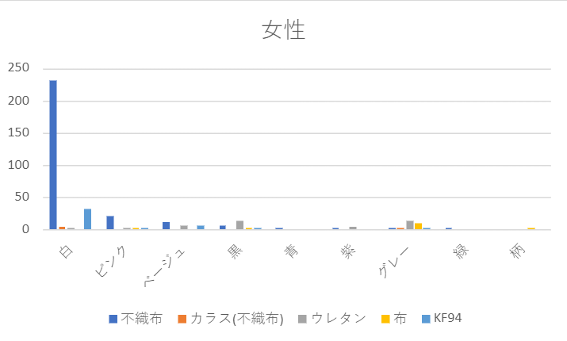
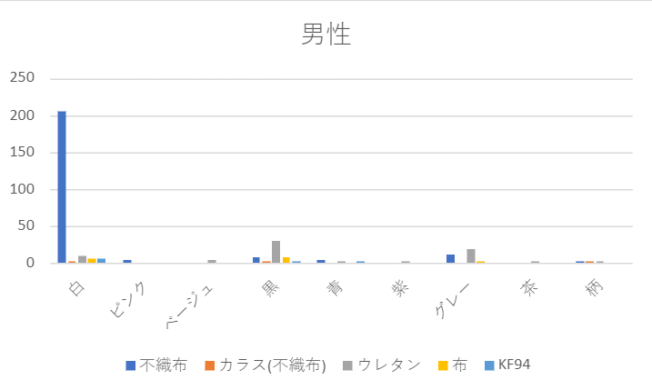
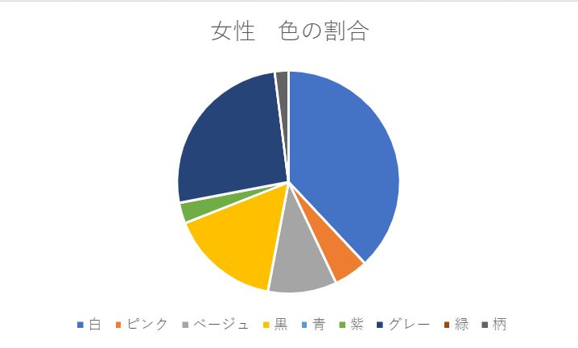
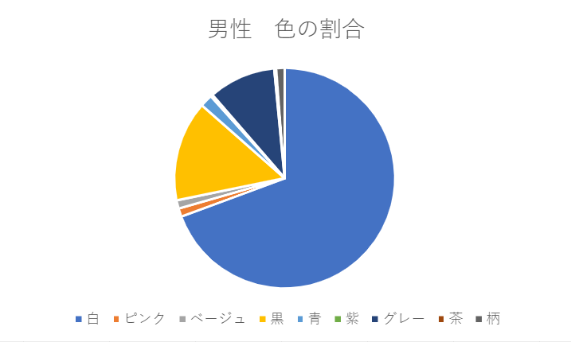
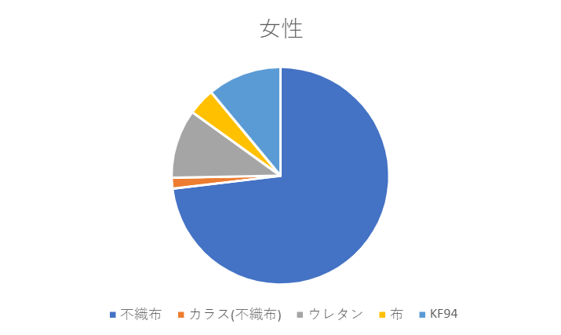
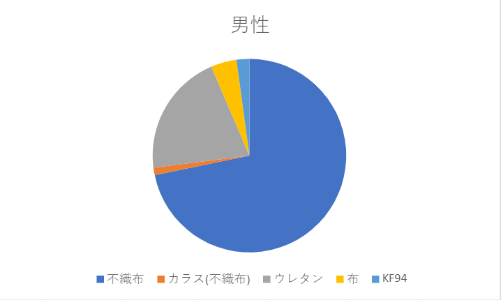

第４回 フィールドワーク 結果
観察内容
調査日時👉10月19日 15時30分～16時30分
調べる対象👉大学生のマスク
調べる内容👉種類・色・形・性別
調べる場所👉神奈川大学正面入り口
調査結果
女性 373人 男性 331 の調査結果
男女別 色・形・種類比較


男女別 色の割合比較


男女別 種類の割合


分かったこと・気づき
男女ともに白の不織布が圧倒的に多い
その他の色で見ると、女性は肌になじむピンクやベージュを好み
男性は黒やグレーを好んでいる傾向がある
また、色の割合では、男性は半分以上白が占めているのに対し、
女性は様々な色を選ぶ傾向にある。
さらに、マスクの種類別でみても
男性は不織布の次に多いのがウレタンなのに対し、
女性はウレタンよりKF94が多くなっている
ここから、男性より女性のほうがマスクの流行やファッション性に
こだわっているひとが多いと考えられる。
グラフ上には記載していないが
男性の中には数名マスクなしや顎マスクの人もいた。
番外編
調査の中で、女性より男性のほうが単独行動の人が多いと感じた。
反省点
休み時間に沢山の人がいっぺんに玄関前に来て調査が雑になりそうだった